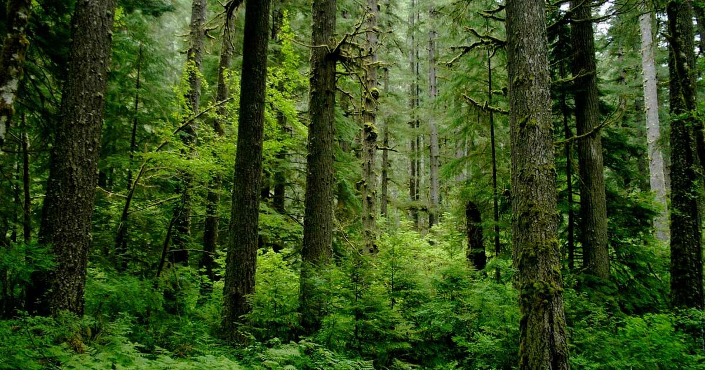
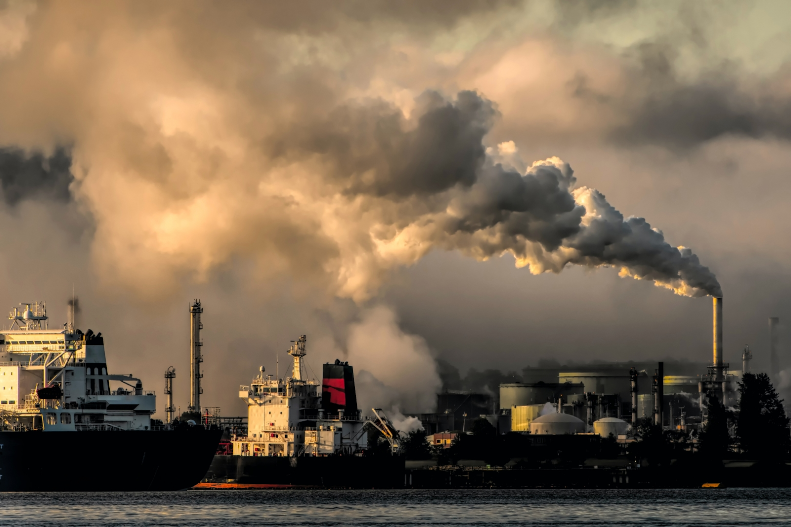

Biosphere
Discover Earth's biosphere — the global network of ecosystems that sustains life, from the deepest oceans to the highest mountains.

The Layers of the Biosphere
The Earth's biosphere is made up of all living organisms and the environments they inhabit. It encompasses ecosystems across land, water, and the atmosphere, integrating the lithosphere (land), hydrosphere (water), and atmosphere (air).

Importance of the Biosphere
The biosphere is vital for maintaining life by cycling nutrients, providing oxygen through photosynthesis, and regulating Earth's climate. It supports biodiversity and offers resources essential for survival.
Biosphere Composition and Structure
The biosphere includes a wide variety of life forms, from microscopic bacteria to massive blue whales. Organisms interact with their physical surroundings, forming intricate ecosystems that operate in balance with the Earth's other spheres.
Ocean Biomes
The oceans cover over 70% of Earth's surface and harbor an immense diversity of life, from coral reefs to deep-sea trenches.
{kind=link}
Forest Biomes
Forests are rich in biodiversity, absorbing carbon dioxide and providing habitat for countless species.

Desert Biomes
Deserts, though arid, are home to specially adapted plants and animals that survive extreme conditions.
{kind=link}
Grassland Biomes
Grasslands support large herbivores and predators, playing an important role in nutrient cycling and food production.
{kind=link}
Tundra Biomes
The tundra, with its cold and harsh climate, is inhabited by resilient species like lichens, mosses, and arctic animals.
{kind=link}
The Future of the Biosphere
Human activity is profoundly affecting the biosphere through habitat destruction, pollution, and climate change. Protecting ecosystems and promoting sustainable practices are critical to preserving the intricate web of life for generations to come.
Life Cycles in the Biosphere
Life cycles are fundamental to the biosphere, governing the birth, growth, reproduction, and death of all living organisms. Each species plays a specific role in the ecosystem, contributing to nutrient cycling, energy flow, and ecological balance.
Impact of Urbanization on the Biosphere
Urbanization transforms natural landscapes into human-dominated environments, often leading to habitat loss, pollution, and reduced biodiversity. However, sustainable urban planning and green spaces can help mitigate negative effects and support urban ecosystems.
Biodiversity and Conservation

Biodiversity is critical for ecosystem resilience and the overall health of the biosphere. Conservation efforts aim to protect endangered species, preserve natural habitats, and promote sustainable practices to maintain Earth's biological richness.